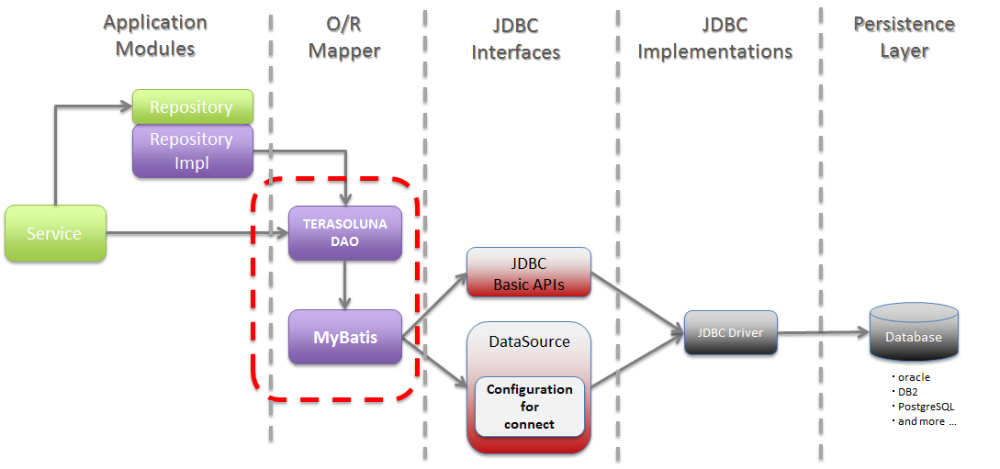
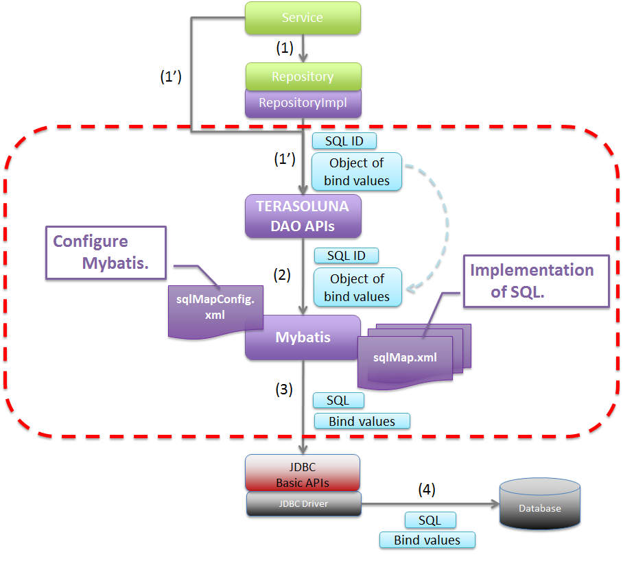
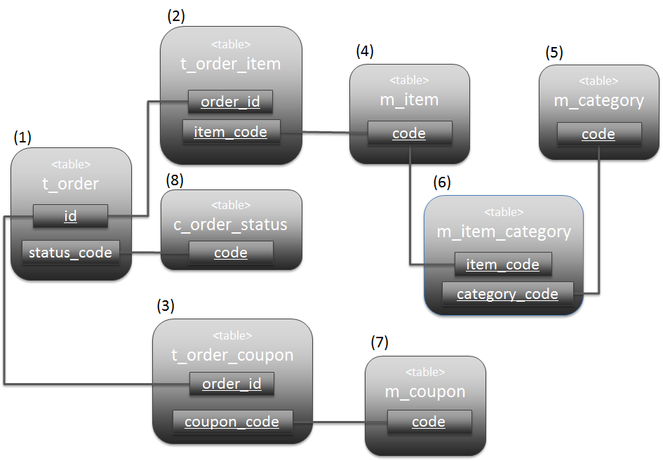
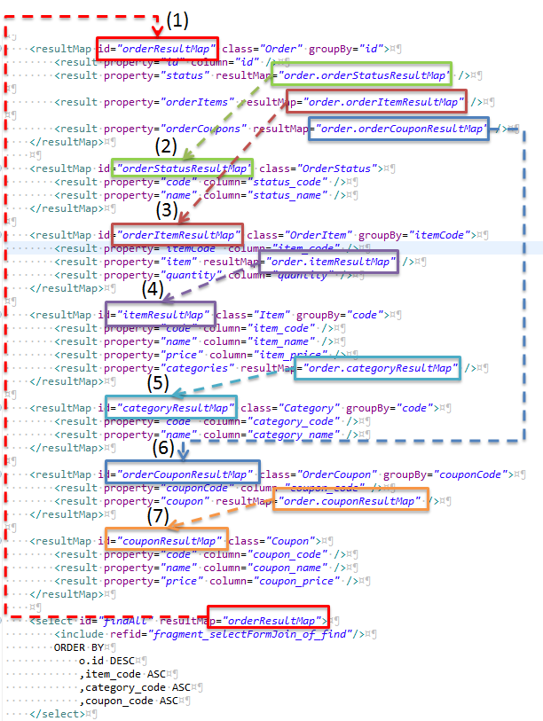
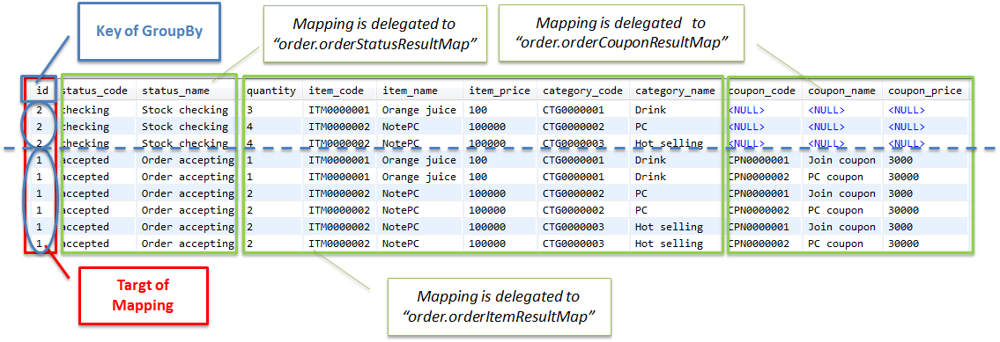
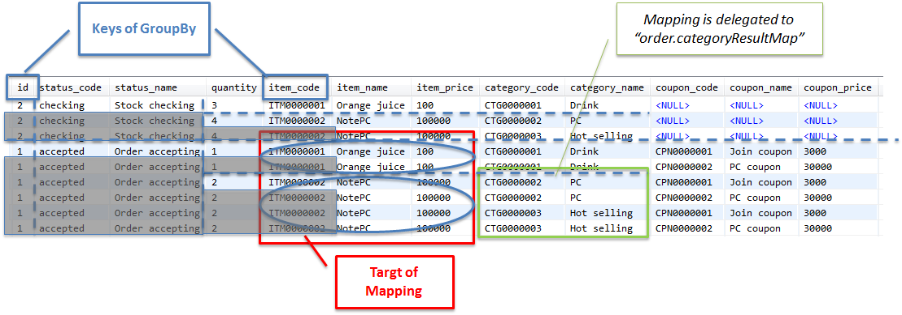
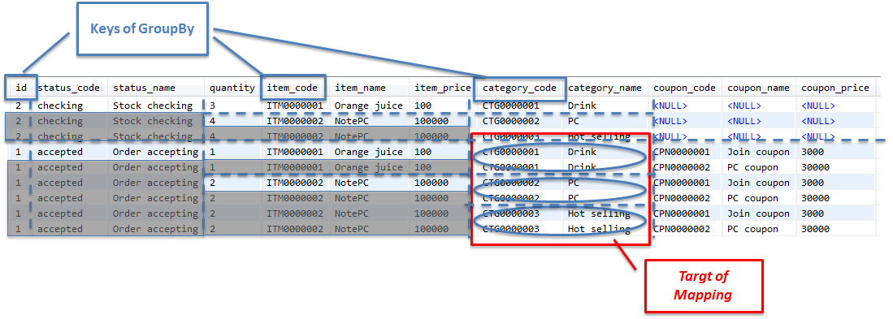

5.3. Database access (Mybatis2)¶
Table of Contents
- Overview
- How to use
- pom.xml settings
- Application settings
- Implementing SQL mapping (Basic version)
- SQL mapping implementation (dynamic SQL version)
- Determining whether parameter object is specified
- Determining whether parameter object (JavaBean) properties exist
- Determining whether property value of parameter object (JavaBean) is set
- Determining the property value of parameter object (JavaBean)
- Common attributes of decision elements
- Collection iteration
- Dynamic SQL blocking
- How to use QueryDAO
- How to use UpdateDAO
- Inserting a single record
- Inserting multiple records (batch execution)
- Updating a single record
- Updating multiple records (batch execution)
- Updating multiple records (Specifying WHERE clause)
- Deleting a single record
- Deleting multiple records (batch execution)
- Deleting multiple records (Specifying WHERE clause)
- Example showing use of StoredProcedureDAO
- Example showing use of QueryRowHandleDAO
- Escaping during LIKE search
- About the measures to be taken against SQL Injection
- Appendix
5.3.1. Overview¶
Picture - Target of description
{kind=link}
5.3.1.1. About Mybatis¶
5.3.1.2. About TERASOLUNA DAO¶
TERASOLUNA DAO provides a DAO interface for hiding processes dependent on O/R Mapper and a DAO implementation class which uses Mybatis2.x.
DAO interfaces provided by TERASOLUNA DAO are as follows:
DAO interfaces provided by TERASOLUNA DAO¶ Sr. No. Class name Description
DAO interface for executing QuerySQL
DAO interface for executing UpdateSQL
DAO interface for executing StoredProcedure
DAO interface to process each record fetched by executing QuerySQL.
Basic flow to access database using TERASOLUNA DAO (Mybatis implementation) is shown below.
Picture - Basic flow of TERASOLUNA DAO
Sr. No. Description sqlMap.xml), and passes the SQL and bind value to JDBC driver.(java.sql.PreparedStatementAPI is used for actual bind value).JDBC driver executes the SQL by sending the bind value and passed SQL to database.
{kind=link}
5.3.2. How to use¶
5.3.2.1. pom.xml settings¶
To use MyBatis2 (TERASOLUNA DAO) in infrastructure layers, add the following dependency to pom.xml.
<!-- (1) --> <dependency> <groupId>org.terasoluna.gfw</groupId> <artifactId>terasoluna-gfw-mybatis2</artifactId> </dependency>
Sr. No. Description terasoluna-gfw-mybatis2that defines the library group relevant to MyBatis2, to dependency.
5.3.2.2. Application settings¶
5.3.2.2.1. Datasource settings¶
For datasource settings, refer to the common version Datasource settings.
5.3.2.2.2. PlatformTransactionManager settings¶
When a local transaction is used, call the API of JDBC and useorg.springframework.jdbc.datasource.DataSourceTransactionManagerthat performs transaction control.
- xxx-env.xml
<bean id="transactionManager" class="org.springframework.jdbc.datasource.DataSourceTransactionManager"> <!-- (1) --> <property name="dataSource" ref="dataSource" /> <!-- (2) --> </bean>
Sr. No. Description Specify org.springframework.jdbc.datasource.DataSourceTransactionManager.Specify the bean of configured datasource.
To use the transaction manager provided by application server, perform the following settings.
When transaction manager provided by application server is used, call the API of JTA and useorg.springframework.transaction.jta.JtaTransactionManagerthat performs transaction control.
- xxx-env.xml
<tx:jta-transaction-manager /> <!-- (1) -->
Sr. No. Description "transactionManager"id, bean is defined forJtaTransactionManager, which is the most appropriate transaction manager for the application server on which the application is deployed,
5.3.2.2.3. TERASOLUNA DAO settings¶
Define the beans for factory class of SqlMapClient provided by Spring Framework and TERASOLUNA DAO.
- xxx-infra.xml
<bean id="sqlMapClient" class="org.springframework.orm.ibatis.SqlMapClientFactoryBean"> <!-- (1) --> <property name="configLocations" value="classpath*:/META-INF/mybatis/config/*sqlMapConfig.xml" /> <!-- (2) --> <property name="mappingLocations" value="classpath*:/META-INF/mybatis/sql/**/*-sqlmap.xml" /> <!-- (3) --> <property name="dataSource" ref="dataSource" /> <!-- (4) --> </bean> <bean id="queryDAO" class="jp.terasoluna.fw.dao.ibatis.QueryDAOiBatisImpl"> <!-- (5) --> <property name="sqlMapClient" ref="sqlMapClient" /> <!-- (6) --> </bean> <!-- (5) (6) --> <bean id="updateDAO" class="jp.terasoluna.fw.dao.ibatis.UpdateDAOiBatisImpl"> <property name="sqlMapClient" ref="sqlMapClient" /> </bean> <!-- (5) (6) --> <bean id="spDAO" class="jp.terasoluna.fw.dao.ibatis.StoredProcedureDAOiBatisImpl"> <property name="sqlMapClient" ref="sqlMapClient" /> </bean> <!-- (5) (6) --> <bean id="queryRowHandleDAO" class="jp.terasoluna.fw.dao.ibatis.QueryRowHandleDAOiBatisImpl"> <property name="sqlMapClient" ref="sqlMapClient" /> </bean>
Sr. No. Description Specify org.springframework.orm.ibatis.SqlMapClientFactoryBeanas the factory class ofSqlMapClientclass.sqlMapConfig.xml” stored in “/META-INF/mybatis/config/” directory in class path.For configuration file, refer to Mybatis settings.-sqlmap.xml” stored under “/META-INF/mybatis/sql/” directory (including sub-directory) in class path.For SQL mapping file, refer to Implementing SQL mapping (Basic version).Specify the bean for the configured datasource. Define the bean by specifying Mybatis implementation class of TERASOLUNA DAO. Specify the bean for the factory class of SqlMapClientclass defined in (1).
5.3.2.2.4. Settings for LOB handling¶
When Large Object like BLOB or CLOB is to be handled, specify LobHandler in the factory class of SqlMapClient class.
- xxx-infra.xml
<!-- (1) --> <bean id="nativeJdbcExtractor" class="org.springframework.jdbc.support.nativejdbc.SimpleNativeJdbcExtractor" /> <!-- (2) --> <bean id="lobHandler" class="org.springframework.jdbc.support.lob.OracleLobHandler"> <property name="nativeJdbcExtractor" ref="nativeJdbcExtractor" /> <!-- (3) --> </bean> <bean id="sqlMapClient" class="org.springframework.orm.ibatis.SqlMapClientFactoryBean"> <property name="configLocations" value="classpath*:/META-INF/mybatis/config/*sqlMapConfig.xml" /> <property name="mappingLocations" value="classpath*:/META-INF/mybatis/sql/**/*-sqlmap.xml" /> <property name="dataSource" ref="dataSource" /> <property name="lobHandler" ref="lobHandler" /> <!-- (4) --> </bean>
Sr. No. Description org.springframework.jdbc.support.nativejdbc.NativeJdbcExtractorinterface.In this example,org.springframework.jdbc.support.nativejdbc.SimpleNativeJdbcExtractoris specified.However, at times, native datasource cannot be fetched in AP servers other than Tomcat.Therefore, it is either necessary to specify another NativeJdbcExtractor provided by Spring or create a newNativeJdbcExtractorfor each AP server.org.springframework.jdbc.support.lob.LobHandlerinterface.In this example, theorg.springframework.jdbc.support.lob.OracleLobHandlerinterface, which is specified when using Oracle is specified.However, specifyorg.springframework.jdbc.support.lob.DefaultLobHandlerwhen Oracle is not used.NativeJdbcExtractordefined in (1).LobHandlerdefined in (3).
5.3.2.2.5. Mybatis settings¶
Customize the default operations of SqlMapClient. They should be customized as per the requirement.
- sqlMapConfig.xml
<?xml version="1.0" encoding="UTF-8" ?> <!DOCTYPE sqlMapConfig PUBLIC "-//ibatis.apache.org//DTD SQL Map Config 2.0//EN" "http://ibatis.apache.org/dtd/sql-map-config-2.dtd"> <!-- (1) --> <sqlMapConfig> <settings useStatementNamespaces="true" /> <!-- (2) --> </sqlMapConfig>
Sr. No. Description Specify the DTD file. This will enable schema check and IDE code completion. By setting useStatementNamespaces="true", namespace specified in SQL mapping file is used as SQLID.
- About sqlMapConfig child elements
properties,settings,resultObjectFactory,typeAlias,transactionManagerandsqlMapare the child elements.They should be set if required.For details, refer to “The SQL Map XML Configuration File” (P.8-16) of Mybatis Developer Guide (PDF).
child elements of sqlMapConfig¶ Sr. No. Elements Description
properties "${Property name}"format from the Mybatis configuration file and SQL mapping file.It is used while defining environment dependent values or common configuration values.For details, refer to “The SQL Map XML Configuration File” (P.9) of Mybatis Developer Guide (PDF).
settings SqlMapClient.For details of setting field, refer to “The SQL Map XML Configuration File” (P.9-11) of Mybatis Developer Guide (PDF).
resultObjectFactory java.lang.Class#newInstance()is used.For details, refer to “The SQL Map XML Configuration File” (P.11-12) of Mybatis Developer Guide (PDF).
typeAlias
transactionManager It is not necessary to define transaction manager since Spring Framework functions are used for transaction management.
sqlMap It is not necessary to define sqlMap since it is already set in TERASOLUNA DAO settings.
5.3.2.3. Implementing SQL mapping (Basic version)¶
Basic SQL mapping implementation is shown below.
Implement the SQL to be used in application.
- xxx-sqlmap.xml
<?xml version="1.0" encoding="UTF-8" ?> <!DOCTYPE sqlMap PUBLIC "-//ibatis.apache.org//DTD SQL Map 2.0//EN" "http://ibatis.apache.org/dtd/sql-map-2.dtd"> <!-- (1) --> <sqlMap namespace="xxx"> <!-- (2) --> <!-- (3) --> <select id="findOne"> <!-- ... --> </select> <!-- ... --> </sqlMap>
Sr. No. Description Specify the DTD file. This will enable schema check and STS code completion. Specify namespace. It is set such that namespace is used as SQLID in sqlMapConfig.xml. Hence, the SQLID specified for executing this SQL is “xxx.findOne”.
- About sqlMap child elements
cacheModel,typeAlias,parameterMap,resultMap,select,insert,update,delete,statement,sqlandprocedureare the child elements.
Child elements of sqlMap¶ Sr. No. Elements Description
typeAlias Same as typeAliasofsqlMapConfig.xml.
cacheModel Element defining an object cache
parameterMap Element defining the mapping of SQL bind parameters (object)
resultMap Element defining the mapping of records and objects returned as SQL execution result
select Element describing SELECT statement
insert Element describing INSERT statement
update Element describing UPDATE statement
delete Element describing DELETE statement
statement Generic elements including elements like select,insert,update,deleteandprocedure. It is recommended to use individual elements (select,insert,update,delete,procedure).
sql Element describing the SQL statement (part of SQL statement) to be included from select,insert,update,delete,statement. Effective use of these elements enables standardization of duplicate parts used in multiple SQLs.
procedure Element describing PROCEDURE call Note
For details, refer to the following chapters of Mybatis Developer Guide (PDF).
Warning
Appropriate value should be set in fetchSize attribute to describe a query such as, returning a large volume of data using
statement,selectandprocedureelements. fetchSize attribute is the parameter that sets the number of data records which are retrieved in a single communication between JDBC driver and database. Default value of each JDBC driver is used when fetchSize attribute is omitted. However, care needs to be taken in case of JDBC driver wherein default value is used to fetch all the records, as it may result in memory exhaustion.
5.3.2.3.1. select element implementation¶
Define mapping for the searched record column and JavaBean property before implementing select elements.
- xxx-sqlmap.xml
<resultMap id="resultMap_Todo" class="xxxxxx.yyyyyy.zzzzzz.domain.model.Todo"> <!-- (1) --> <result property="todoId" column="todo_id" /> <!-- (2) --> <result property="todoTitle" column="todo_title" /> <result property="finished" column="finished" /> <result property="createdAt" column="created_at" /> <result property="version" column="version" /> </resultMap>
Sr. No. Attribute Description Map the searched records and JavaBean. For details, refer to Developer Guide. Specify the ID to identify mapping. It is referred from select attribute. Specify the FQCN of JavaBean to be mapped. Map JavaBean property with searched record columns. Specify JavaBean property name. Specify the column name of the record to be mapped in property specified in “properties” attribute.
Implement select element.
- xxx-sqlmap.xml
<select id="findOne" parameterClass="java.lang.String" resultMap="resultMap_Todo"> <!-- (3) --> SELECT * FROM todo WHERE todo_id = #todoId# /* (4) */ </select>
Sr. No. Attribute Description Execute the Search SQL. Specify the ID for identifying Search SQL. java.lang.Stringis specified. However, JavaBean can also be specified when multiple parameters (search conditions) are to be passed."SELECT todo_title AS todoTitle, ...", a value is set to the todoTitle property of JavaBean.java.lang.String) is used instead of JavaBean, any name can be specified for bind variable.When JavaBean is used for bind object, bind variable name must match with the JavaBean property name.Note
About automatic mapping
It is possible to map automatically to the JavaBean property specified in resultClass attribute, without using resultMap. However, the column name of fetched record must match with the JavaBean property name. To match the column name of fetched record with JavaBean property name, an alias is assigned to the column using AS clause. Implementation with auto mapping is shown below.
<select id="findOne" parameterClass="java.lang.String" resultClass="xxxxxx.yyyyyy.zzzzzz.domain.model.Todo"> SELECT todo_id AS todoId, todo_title AS todoTitle, finished, created_at AS createdAt, version FROM todo WHERE todo_id = #todoId# </select>Auto mapping is the simplest method for mapping fetched records and JavaBean. However, following restrictions and precautions should be considered while using auto mapping,
- Type declaration and conversion definition of the value fetched in SQL cannot be performed.
- Complex mapping (for example, mapping to nested JavaBean) cannot be performed.
- There is a slight degradation in performance as
java.sql.ResultSetMetaDatais accessed during mapping.
5.3.2.3.2. “insert” element implementation¶
Implement insert element.
- xxx-sqlmap.xml
<insert id="insert" parameterClass="xxxxxx.yyyyyy.zzzzzz.domain.model.Todo"> <!-- (1) --> INSERT INTO todo ( todo_id ,todo_title ,finished ,created_at ,version ) values( #todoId# /* (2) */ ,#todoTitle# ,#finished# ,#createdAt# ,1 ) </insert>
Sr. No. Attribute Description Implement Insert SQL. Specify the ID to identify Insert SQL. Specify the type of bind object. JavaBean can also be specified. Specify the bind value in SQL. When JavaBean is used for bind object, bind variable name must match with the JavaBean property name. Note
Type declaration or conversion definition of SQL bind value can be performed by using the parameterMap attribute or “Inline Parameter Maps” feature. For example, when bind value is
null, default value can be set. For details, refer to “Parameter Maps and Inline Parameters” (P.27-31) of Mybatis Developer Guide (PDF).
5.3.2.3.3. “update” element implementation¶
Implement update element.
- xxx-sqlmap.xml
<update id="update" parameterClass="xxxxxx.yyyyyy.zzzzzz.domain.model.Todo"> <!-- (1) --> UPDATE todo SET todo_id = #todoId# ,todo_title = #todoTitle# ,finished = #finished# ,version = (#version# + 1) WHERE todo_id = #todoId# AND version = #version# </update>
Sr. No. Description Implement Update SQL.
5.3.2.3.4. “delete” element implementation¶
Implement delete element.
- xxx-sqlmap.xml
<delete id="delete" parameterClass="java.lang.String"> <!-- (1) --> DELETE FROM todo WHERE todo_id = #todoId# </delete>
Sr. No. Description Implement Delete SQL.
5.3.2.3.5. “procedure” element implementation¶
Calling the function created in PostgreSQL using procedure element is shown below.
SQL to create functions (PL/pgSQL implementation) and tables is as follows:
CREATE TABLE sales ( itemno INT4 PRIMARY KEY, quantity INT4 NOT NULL, price INT4 NOT NULL );CREATE FUNCTION sales_item(p_itemno INT4) RETURNS TABLE ( quantity INT4 ,total INT4 ) AS $$ BEGIN RETURN QUERY SELECT s.quantity ,s.quantity * s.price FROM sales s WHERE itemno = p_itemno; END; $$ LANGUAGE plpgsql;
Implement parameterMap element.
<!-- (1) --> <parameterMap id="salesItemMap" class="xxxxxx.yyyyyy.zzzzzz.domain.model.SalesItem"> <!-- (2) --> <parameter property="id" jdbcType="INTEGER" javaType="java.lang.Integer" mode="IN" /> <!-- (3) --> <parameter property="quantity" jdbcType="INTEGER" javaType="java.lang.Integer" mode="OUT" /> <parameter property="total" jdbcType="INTEGER" javaType="java.lang.Integer" mode="OUT" /> </parameterMap>// (4) public class SalesItem implements Serializable { private Integer id; private Integer quantity; private Integer total; // ... }
Sr. No. Description Define mapping of IN parameter and OUT parameter to be passed to the function. Mapping of IN parameter is defined. SalesItem#idis mapped with IN parameter.Mapping of OUT parameters is defined. 1st OUT parameter is mapped with SalesItem#quantityand the 2nd OUT parameter is mapped withSalesItem#total.JavaBean to be mapped. Note
Mapping can also be carried out with “Inline Parameter Maps” feature, without using parameterMap attribute. For specific examples, refer to “Parameter Maps and Inline Parameters” (P.31) of Mybatis Developer Guide(PDF).
Implement procedure element.
<procedure id="findSalesItem" parameterMap="salesItemMap"> <!-- (1) --> {call sales_item(?,?,?)} </procedure>
Sr. No. Description sales_itemfunction.Bound values serve as a definition sequence of mapping definitions specified in parameterMap element.
5.3.2.3.6. “sql” element implementation¶
Implement sql element.
- xxx-sqlmap.xml
<sql id="fragment_where_byFinished"> <!-- (1) --> WHERE finished = #finished# </sql> <select id="findByFinished" parameterClass="Boolean" resultMap="resultMap_Todo"> <!-- (2) --> SELECT * FROM todo <include refid="fragment_where_byFinished" /> <!-- (3) --> ORDER BY created_at DESC </select> <select id="countByFinished" parameterClass="Boolean" resultClass="long"> <!-- (4) --> SELECT count(*) FROM todo <include refid="fragment_where_byFinished" /> <!-- (5) --> </select>
Sr. No. Description WHERE clause shared by the SQLs of (2) and (4) is defined. SQL to be included should be defined before the SQL that implements ‘include’. SQL for fetching the data that matches the condition. Include the SQL implemented by WHERE clause defined in (1). SQL for fetching data records that match the conditions Include the SQL implemented by WHERE clause defined in (1).
5.3.2.3.7. LOB update implementation¶
- DDL
CREATE TABLE upload_binary ( file_id CHAR(36) NOT NULL, file_name VARCHAR(256) NOT NULL, content BLOB NOT NULL, -- (1) CONSTRAINT pk_upload_binary PRIMARY KEY (file_id) );
Sr. No. Description
- DTO (JavaBean)
public class BinaryFile implements Serializable { // omitted private String fileId; private String fileName; private InputStream content; // (2) // omitted setter/getter }
Sr. No. Description java.io.InputStreamtype.In the above example, input stream of uploaded file is set inInputStream.Warning
It is recommended to always define the type of property that handles BLOB, in
InputStreamtype. BLOB can also be handled as a byte array. However, it may cause memory exhaustion in case of increased data capacity.It is recommended to always define the type of property that handles CLOB, in
java.io.Readertype. CLOB can also be handled as a string. However, it may cause memory exhaustion in case of increased data capacity.
- xxx-sqlmap.xml
<parameterMap id="uploadBinaryParameterMap" class="xxxxxx.yyyyyy.zzzzzz.domain.service.BinaryFile"> <parameter property="fileId" /> <parameter property="fileName" /> <!-- (3) --> <parameter property="content" jdbcType="BLOB" typeHandler="jp.terasoluna.fw.orm.ibatis.support.BlobInputStreamTypeHandler" /> </parameterMap> <!-- (4) --> <insert id="uploadBinary" parameterMap="uploadBinaryParameterMap"> INSERT INTO upload_binary ( file_id ,file_name ,content ) VALUES ( ? ,? ,? ) </insert>
Sr. No. Description "BLOB"in jdbcType attribute and"jp.terasoluna.fw.orm.ibatis.support.BlobInputStreamTypeHandler"in typeHandler attribute.Note
While handling CLOB, specify
"CLOB"in jdbcType attribute and"jp.terasoluna.fw.orm.ibatis.support.ClobReaderTypeHandler"in typeHandler attribute.Tip
Class name specified in FQCN can be described in a simple manner by assigning an alias to it using typeAlias element.
<!-- (5) --> <typeAlias alias="BinaryFile" type="xxxxxx.yyyyyy.zzzzzz.domain.service.BinaryFile"/> <typeAlias alias="BlobInputStreamTypeHandler" type="jp.terasoluna.fw.orm.ibatis.support.BlobInputStreamTypeHandler"/> <parameterMap id="uploadBinaryParameterMap" class="BinaryFile"> <!-- (6) --> <!-- omitted --> <parameter property="content" jdbcType="BLOB" typeHandler="BlobInputStreamTypeHandler" /> <!-- (6) --> </parameterMap>
Sr. No. Description BinaryFileclass andBlobInputStreamTypeHandlerclass.typeAlias element can be defined in bothsqlMapConfig.xmlandxxx-sqlmap.xml.
- Service
// omitted @Inject UpdateDAO updateDAO; // omitted public BinaryFile uploadBinaryFile(String fileName, InputStream contentInputStream) { // (7) BinaryFile inputFile = new BinaryFile(); inputFile.setFileId(UUID.randomUUID().toString()); inputFile.setFileName(fileName); inputFile.setContent(contentInputStream); // (8) updateDAO.execute("example.uploadBinary", inputFile); return inputFile; } // omitted
Sr. No. Description InputStreamobject that stores the file contents are set in DTO.UpdateDAO.Method for calling DAO is same as the method when BLOB is not handled.
- Controller
@RequestMapping("uploadBinary") public String uploadBinaryFile( @RequestPart("file") MultipartFile multipartFile, Model model) throws IOException { // (9) BinaryFile uploadedFile = uploadService.uploadBinaryFile(multipartFile .getOriginalFilename(), multipartFile.getInputStream()); model.addAttribute(uploadedFile); return "upload/form"; }
Sr. No. Description InputStreamthat stores the file contents in argument.
5.3.2.3.8. Implementation for fetching LOB type¶
- xxx-sqlmap.xml
<resultMap id="selectBinaryResultMap" class="BinaryFile"> <result property="fileId" column="file_id" /> <result property="fileName" column="file_name" /> <!-- (1) --> <result property="content" column="content" jdbcType="BLOB" typeHandler="BlobInputStreamTypeHandler" /> </resultMap> <!-- (2) --> <select id="selectBinary" parameterClass="java.lang.String" resultMap="selectBinaryResultMap"> SELECT * FROM upload_binary WHERE file_id = #fileId# </select>
Sr. No. Description "BLOB"in jdbcType attribute and"jp.terasoluna.fw.orm.ibatis.support.BlobInputStreamTypeHandler"in typeHandler attribute.Note
While handling CLOB, specify
"CLOB"in jdbcType attribute and"jp.terasoluna.fw.orm.ibatis.support.ClobReaderTypeHandler"in typeHandler attribute.
- Service / Repository
// omitted @Inject QueryDAO queryDAO; // omitted public BinaryFile getBinaryFile(String fileId) { // (3) BinaryFile loadedFile = queryDAO.executeForObject( "article.selectBinary", fileId, BinaryFile.class); return loadedFile; } // omitted
Sr. No. Description QueryDAO.In the above example, upload file information matching with file ID is fetched.Method for calling DAO is same as the method when BLOB is not handled.
5.3.2.4. SQL mapping implementation (dynamic SQL version)¶
5.3.2.4.1. Determining whether parameter object is specified¶
SQL can be built by determining whether the parameter object passed to SQL is specified.
Decision elements are as follows:
Sr. No. Element Description
isParameterPresent Element for building SQL when parameter object is specified (Not NULL).
isNotParameterPresent Element for building SQL when parameter object is not specified (NULL).
Implementation is as follows:
<select id="findOne" parameterClass="java.lang.Integer" resultMap="..."> SELECT * FROM t_order WHERE <isParameterPresent> <!-- (1) --> id = #id# </isParameterPresent> <isNotParameterPresent> <!-- (2) --> 1 = 2 </isNotParameterPresent> <!-- ... --> </select>
Sr. No. Description 1=2” is set so that there are no matching records, when the parameter object is not specified.
Following 2 patterns of SQL are generated by the dynamic SQL mentioned above.
-- (1) parameterObject(id)=1 SELECT * FROM t_order WHERE id = 1 -- (2) SELECT * FROM t_order WHERE 1 = 2
5.3.2.4.2. Determining whether parameter object (JavaBean) properties exist¶
SQL can be built by determining whether the properties specified in parameter object (JavaBean) passed to SQL, exist.
Decision elements are as follows:
Sr. No. Element Description
isPropertyAvailable Element for building SQL when the specified property exists.
isNotPropertyAvailable Element for building SQL when the specified property does not exist.
Implementation is as follows:
<select id="findOne" parameterClass="OrderCriteria" resultMap="..."> SELECT * FROM t_order WHERE <isPropertyAvailable property="statusCode"> <!-- (1) --> status_code = #statusCode# </isPropertyAvailable> <isNotPropertyAvailable property="statusCode"> <!-- (2) --> <![CDATA[ status_code <> 'completed' ]]> </isNotPropertyAvailable> <!-- ... --> </select>
Sr. No. Description statusCodeproperty exists, WHERE clause is set such that status_code column fetches records matching withstatusCode.statusCodeproperty does not exist, WHERE clause is set such that status_code column fetches records other than'completed'.
Following 2 patterns of SQL are generated by dynamic SQL mentioned above.
-- (1) statusCode='checking' SELECT * FROM t_order WHERE status_code = 'checking' -- (2) SELECT * FROM t_order WHERE status_code <> 'completed'
5.3.2.4.3. Determining whether property value of parameter object (JavaBean) is set¶
SQL can be built by determining whether value is specified in the parameter object (JavaBean) property passed to SQL.
Determination of elements is as follows:
Sr. No. Element Description
isNull Element for building SQL when property value is null.
isNotNull Element for building SQL when property value is not null.
isEmpty Element for building SQL when property value is nullor empty. It can be specified forCollectionandString.
isNotEmpty Element for building SQL when property value is nulland not empty. It can be specified forCollectionandString.
Implementation is as follows:
<select id="findOne" parameterClass="OrderCriteria" resultMap=""> SELECT * FROM t_order WHERE <isNull property="orderedDate"> <!-- (1) --> <![CDATA[ CURRENT_DATE - '1 months'::interval <= ordered_date ]]> </isNull> <isNotNull property="orderedDate"> <!-- (2) --> ordered_date = #orderedDate# </isNotNull> <isEmpty property="statusCodes" prepend="AND"> <!-- (3) --> <![CDATA[ status_code <> 'completed' ]]> </isEmpty> <isNotEmpty property="statusCodes" prepend="AND"> <!-- (4) --> status_code IN <iterate property="statusCodes" open="(" close=")" conjunction=","> #statusCodes[]# </iterate> </isNotEmpty> </select>
Sr. No. Description orderedDateproperty (Date type) value isnull, WHERE clause is set such that the ordered_date column can fetch records starting from one month prior to the current date.orderedDateproperty (Date type) value is notnull, WHERE clause is set such that the ordered_date column can fetch records that match withorderedDate.statusCodesproperty (List<String> type) value is empty, WHERE clause is set such that the status_code column can fetch records other than'completed'.statusCodesproperty (List<String> type) value is not empty, WHERE clause is set such that the status_code column can fetch records that match with any of the values stored instatusCodes.iterate element is described later.
Following 4 SQL patterns are generated by the dynamic SQL mentioned above.
-- (1) orderedDate=null, statusCodes=[] SELECT * FROM t_order WHERE CURRENT_DATE - '1 months'::interval <= ordered_date AND status_code <> 'completed' -- (2) orderedDate=null, statusCodes=['accepted','checking'] SELECT * FROM t_order WHERE CURRENT_DATE - '1 months'::interval <= ordered_date AND status_code IN ('accepted','checking') -- (3) orderedDate=2013/12/31, statusCodes=null SELECT * FROM t_order WHERE ordered_date = '2013/12/31' AND status_code <> 'completed' -- (4) orderedDate=2013/12/31, statusCodes=['accepted'] SELECT * FROM t_order WHERE ordered_date = '2013/12/31' AND status_code IN ('accepted')
5.3.2.4.4. Determining the property value of parameter object (JavaBean)¶
SQL can be built by determining the value specified in the property of parameter object (JavaBean) passed to SQL.
Decision elements are as follows:
Sr. No. Element Description
isEqual Element for building SQL when property value matches with the specified value.
isNotEqual Element for building SQL when property value does not match with the specified value.
isGreaterThan Element for building SQL when property value is greater than the specified value.
isGreaterEqual Element for building SQL when property value is greater than or equal to the specified value.
isLessThan Element for building SQL when property value is less than the specified value.
isLessEqual Element for building SQL when property value is less than or equal to the specified value.
Implementation is as follows:
<select id="findOne" parameterClass="OrderCriteria" resultMap="..."> SELECT * FROM t_order WHERE ( <![CDATA[ status_code <> 'completed' ]]> <isEqual property="containCompletedOrder" compareValue="true" prepend="OR"> <!-- (1) --> status_code = 'completed' </isNull> ) </select>
Sr. No. Description containCompletedOrderproperty (Boolean type) value istrue, WHERE clause is set such that the status_code column fetches'completed'records as well.Note
Other property values in JavaBean can be compared by using compareProperty attribute.
Following 2 SQL patterns are generated by the dynamic SQL mentioned above.
-- (1) containCompletedOrder=false SELECT * FROM t_order WHERE (status_code <> 'completed') -- (2) containCompletedOrder=true SELECT * FROM t_order WHERE (status_code <> 'completed' OR status_code = 'completed')
5.3.2.4.5. Common attributes of decision elements¶
Elements that build dynamic SQL have the following common attributes.
Sr. No. Attribute Description
prepend When the SQL statement is determined as trueby the decision element used for building dynamic SQL, specify the character string set at the beginning of the SQL.
open Specify the character string to be added before the built SQL in the decision element used for building dynamic SQL.
close Specify the character string to be added at the end of the built SQL in the decision element used for building dynamic SQL.
Implementation is as follows:
<select id="findOne" parameterClass="OrderCriteria" resultMap="..."> SELECT * FROM t_order <isNotEmpty property="statusCode" prepend="WHERE" open="(" close=")"> <!-- (1) --> status_code = #statusCode# <isEqual property="containCompletedOrder" compareValue="true" prepend="OR"> status_code = 'completed' </isEqual> </isNotEmpty> </select>
Sr. No. Attribute Description statusCodeproperty, on setting the WHERE clause in status_code column, if thecontainCompletedOrderproperty (Boolean type) value istrue, WHERE clause is set such that status_code column fetches'completed'records as well."WHERE"clause is set in SQL when value is specified instatusCodeproperty.containCompletedOrderproperty (Boolean type) value istrue,opening character"(", used for grouping the conditions for status_code column is specified, so as to add the OR condition.")"used for grouping the conditions for status_code column is specified.
Following 3 SQL patterns are generated by dynamic SQL mentioned above.
-- (1) statusCode=null, containCompletedOrder=false SELECT * FROM t_order -- (2) statusCode='accepted', containCompletedOrder=false SELECT * FROM t_order WHERE (status_code = 'accepted') -- (3) statusCode='checking', containCompletedOrder=true SELECT * FROM t_order WHERE (status_code = 'checking' OR status_code = 'completed')
5.3.2.4.6. Collection iteration¶
When a collection or array of bind values is passed to SQL, the SQL can be built by iterating the process for element part of the collection and array.
Element is as follows:
Sr. No. Element Description
iterate Element that builds SQL by carrying out iteration process for collection and array.
Implementation is as follows:
<select id="findOne" parameterClass="OrderCriteria" resultMap="..."> SELECT * FROM t_order <isNotNull property="statusCodes" prepend="WHERE"> <iterate property="statusCodes" prepend="status_code IN" open="(" conjunction="," close=")" > <!-- (1) --> #statusCodes[]# </iterate> </isNotNull> </select>
Sr. No. Attribute Description statusCodesproperty (List<String>) is set as a value for IN clause."("of the value specified in IN clause is specified.","of the value specified in IN clause is specified.")"of the value specified in IN clause is specified.Note
The above example illustrates the implementation wherein the JavaBean properties are of collection type. However, the parameter objects themselves can be set to collection type. In that case, it can be accessed in
#[]#format without specifying the property attribute.JavaBean can also be stored in collection and JavaBean nested collection can also be accessed. For details, refer to “Dynamic Mapped Statements” (P.52) of the Developer Guide (PDF).
Following 3 SQL patterns are generated by the dynamic SQL mentioned above.
-- (1) statusCodes=null SELECT * FROM t_order -- (2) statusCodes=[] SELECT * FROM t_order -- (3) statusCodes=['accepted','checking'] SELECT * FROM t_order WHERE status_code IN ('accepted' , 'checking')
5.3.2.4.7. Dynamic SQL blocking¶
By blocking individual dynamic SQL, prepend, open and close attributes can be controlled as an entire block.
The elements are as follows:
Sr. No. Element Description
dynamic Element that blocks the elements building the dynamic SQL.
Implementation is as follows:
<select id="findOne" parameterClass="OrderCriteria" resultMap="..."> SELECT * FROM t_order WHERE <dynamic prepend="WHERE" open="(" close=")"> <!-- (1) --> <isNotEmpty property="id" prepend="AND"> <!-- (2) --> id = #id# </isNotEmpty> <isNotEmpty property="statusCode" prepend="AND"> <!-- (3) --> status_code = #statusCode# </isNotEmpty> </dynamic> </select>
Sr. No. Attribute Description idproperty, the value of prepend attribute in (2) becomes"WHERE"rather than"AND".
Following 4 SQL patterns are generated by the dynamic SQL mentioned above.
-- (1) id=null, statusCode=null SELECT * FROM t_order -- (2) id=1, statusCode=null SELECT * FROM t_order WHERE (id = 1) -- (3) id=null, statusCode='accepted' SELECT * FROM t_order WHERE (status_code = 'accepted') -- (4) id=1, statusCode='accepted' SELECT * FROM t_order WHERE (id = 1 AND status_code = 'accepted')
5.3.2.5. How to use QueryDAO¶
5.3.2.5.1. Single record search¶
Implementation is as follows when a query with search results as 0 to 1 record is issued.
- Xxx.java
String todoId = "xxxxx...."; Todo loadedTodo = queryDAO.executeForObject( // (1) "todo.findOne", // (2) todoId, // (3) Todo.class); // (4) if (loadedTodo == null) { // (5) // ... // (6) }
Sr. No. Description Call the method ( QueryDAO#executeForObject) that fetches search result as the object of type specified in (4).java.sql.SQLExceptionwhen the search results are more than one.java.lang.String. However, when multiple parameters (search conditions) are to be passed, JavaBean can also be specified.Specify the type of object that maps the fetch results of SQL. When the search result shows 0 records, the value becomes null. Hence, null check is necessary. Implement the process when search result is 0 records.
5.3.2.5.2. Multiple records search¶
Implementation is as follows when query with search result 0 to N records is issued and all the data matching with the conditions is fetched.
- Xxx.java
boolean finished = false; List<Todo> unfinishedTodoList = queryDAO.executeForObjectList( // (1) "todo.findByFinished", // (2) finished); // (3) if(unfinishedTodoList.isEmpty()){ // (4) // ... // (5) }
Sr. No. Description Call the method to fetch the objects list. Specify SQLID of the SQL with search result 0 to N records. When search result is 0 records, an empty list is returned. null check is not required as null value is not returned. Implement the process when search result is 0 records.
5.3.2.5.3. Pagination search (TERASOLUNA DAO standard function system)¶
Warning
Points to be noted when an extremely large number of data records match with search conditions
In the TERASOLUNA DAO standard function pagination search, the part up to starting position of the records that are fetched using
java.sql.ResultSet#nextis skipped. As a result, when the number of data records matching with search conditions is huge, it may impact the process performance. When there is a possibility of a huge number of data records matching the search conditions, SQL refinement should be adopted instead of pagination search of TERASOLUNA DAO standard function.
- Xxx.java
Pageable pageable = new PageRequest(0, 10); // (1) boolean finished = false; long totalCount = queryDAO.executeForObject( "todo.countByFinished", // (2) finished, Long.class); // (3) List<Todo> unfinishedTodoList = null; if(0 < totalCount) { unfinishedTodoList = queryDAO.executeForObjectList( "todo.findByFinished", // (4) finished, pageable.getOffset(), // (5) pageable.getPageSize()); // (6) } else { unfinishedTodoList = new ArrayList<Todo>(); } Page<Todo> page = new PageImpl<Todo>( // (7) unfinishedTodoList, // (8) pageable, // (9) totalCount); // (10)
- xxx-sqlmap.xml
<select id="findByFinished" parameterClass="boolean" resultMap="resultMap_Todo"> <!-- (11) --> SELECT * FROM todo WHERE finished = #finished# ORDER BY created_at DESC </select>
Sr. No. Description Generate paging search object ( org.springframework.data.domain.PageRequest) provided by Spring Data. Pageable object can also be received as Controller argument by specifying in request parameters. For details, refer to Pagination.Execute by specifying the SQLID of the SQL that fetches total number of data records matching with the condition. Specify Long.class since this involves fetching records. Execute by specifying the SQLID of the SQL with search result 0 to N records. Generate the page object ( org.springframework.data.domain.PageImpl) provided by Spring Data.Carry out pagination search and specify the fetched list. Specify the paging search object (Pageable) used in pagination search. Specify the total number of data records that match with the condition. SQL implementation. It is not necessary to consider the fetch position in case of SQL.
5.3.2.5.4. Pagination search (SQL refinement)¶
- PageableBindParams.java (Sample class)
public class PageableBindParams<P> implements Serializable { // (1) private static final long serialVersionUID = 1L; private final P bindParams; private final Pageable pageable; public PageableBindParams(P bindParams, Pageable pageable) { this.bindParams = bindParams; this.pageable = pageable; } public P getBindParams() { return bindParams; } public Pageable getPageable() { return pageable; } }
- Xxx.java
Pageable pageable = new PageRequest(0, 10); boolean finished = false; long totalCount = queryDAO.executeForObject( "todo.countByFinished", finished, Long.class); // (2) List<Todo> unfinishedTodoList = null; if(0 < totalCount) { PageableBindParams<Boolean> pageableBindParams = new PageableBindParams<Boolean>( // (3) finished, // (4) pageable); // (5) unfinishedTodoList = queryDAO.executeForObjectList( "todo.findPageByFinished", // (6) pageableBindParams); // (7) } else { unfinishedTodoList = new ArrayList<Todo>(); } Page<Todo> page = new PageImpl<Todo>( unfinishedTodoList, pageable, totalCount); // (8)
- xxx-sqlmap.xml
<select id="findPageByFinished" parameterClass="xxxxxx.yyyyyy.zzzzzz.domain.dto.PageableBindParams" resultMap="resultMap_Todo"> <!-- (9) --> SELECT * FROM todo WHERE finished = #bindParams# ORDER BY created_at DESC OFFSET #pageable.offset# /* (10) */ LIMIT #pageable.pageSize# /* (11) */ </select>
Sr. No. Description JavaBean storing the parameters (bind parameter) that form search conditions and paging search object provided by Spring Data ( org.springframework.data.domain.Pageable). An aggregate object like this class is necessary since only a single object can be passed to DAO. This class should be provided as required in each project since it is a sample implementation.Fetch the total number of records similar to using TERASOLUNA DAO standard function. org.springframework.data.domain.PageRequest) is specified.The Pageable object can also be received as Controller argument by specifying it in request parameters. For details, refer to Pagination.Specify SQLID of the SQL executed by the SQL that extracts data on the corresponding page. Specify the bind object generated in (3). Same as using TERASOLUNA DAO standard function, generate the page object provided by Spring Data ( org.springframework.data.domain.PageImpl).SQL implementation. In the example, PostgreSQL function (OFFSET, LIMIT) are used. As an SQL, notice the fetch position.
5.3.2.6. How to use UpdateDAO¶
5.3.2.6.1. Inserting a single record¶
The implementation is as follows when a single data record is to be inserted.
- Xxx.java
// (1) Todo todo = new Todo(); todo.setTodoId(todoId); todo.setTodoTitle(todoTitle); todo.setFinished(false); todo.setCreatedAt(now); int insertedCount = updateDAO.execute("todo.insert", todo); // (2) if(insertedCount != 1){ // (3) // ... // (4) }
Sr. No. Description Generate the data to be inserted (JavaBean). Execute DAO by specifying SQLID of Insert SQL and the data to be inserted (JavaBean). If required, check the number of data records actually inserted. In the example, it is checked whether a single record is inserted. If required, carry out the process when the number of actually inserted records differs from number of expected records.
5.3.2.6.2. Inserting multiple records (batch execution)¶
jp.terasoluna.fw.dao.SqlHolder provided by TERASOLUNA DAO.- Xxx.java
// (1) Todo todo = new Todo(); todo.setTodoId(todoId); todo.setTodoTitle(todoTitle); todo.setFinished(false); todo.setCreatedAt(now); // (2) Todo todo2 = new Todo(); todo2.setTodoId(todoId2); todo2.setTodoTitle(todoTitle2); todo2.setFinished(false); todo2.setCreatedAt(now); List<SqlHolder> sqlHolders = new ArrayList<SqlHolder>(); // (3) sqlHolders.add(new SqlHolder("todo.insert", todo)); // (4) sqlHolders.add(new SqlHolder("todo.insert", todo2)); // (4) int insertedCount = updateDAO.executeBatch(sqlHolders); // (5) if(insertedCount != 2){ // (6) // ... // (7) }
Sr. No. Description Generate the data to be inserted (JavaBean). 1st data record. Generate the data to be inserted (JavaBean). 2nd data record. Generate a list of jp.terasoluna.fw.dao.SqlHolderprovided by TERASOLUNA DAO, for batch execution.Add the data generated in (1), (2) to the SqlHolder list as bind objects. In the example, 2 records are added to the list. Execute batch by specifying the SqlHolder list generated in (1)~(4). If required, carry out the process when the number of actually inserted records differs from the number of expected records.
Warning
About number of records inserted in batch execution
There are cases where, on batch execution, exact number of rows cannot be fetched using JDBC driver. When a driver that is unable to fetch the exact number of rows is used, batch execution should not be carried out for the cases wherein number of inserted records need to be checked. (This holds true for updated records and deleted records as well).
5.3.2.6.3. Updating a single record¶
- Xxx.java
Todo loadedTodo = queryDAO.executeForObject("todo.findOne", todoId, Todo.class); // (1) todo2.setFinished(true); // (2) int updatedCount = updateDAO.execute("todo.update", todo); // (3) if(updatedCount != 1){ // (4) // ... // (5) }
Sr. No. Description Search the data to be updated (JavaBean). Update data. In the example, “finished” is updated from false to true. Execute DAO by specifying SQLID of the Update SQL and the data to be updated (JavaBean). If required, carry out the process when the number of actually updated records differs from the number of expected records.
5.3.2.6.4. Updating multiple records (batch execution)¶
5.3.2.6.5. Updating multiple records (Specifying WHERE clause)¶
- Xxx.java
int deadlineDays = 7; int updatedCount = updateDAO.execute("todo.update", deadlineDays); // (1)
- xxx-sqlmap.xml
<update id="updateFinishedDeadlineByUnfinished" parameterClass="int"> <!-- (2) --> <![CDATA[ UPDATE todo SET todo_title = '[Finished Deadline]' || todo_title ,version = (version + 1) WHERE finished = false AND created_at < current_date - #deadlineDays# ]]> </update>
Sr. No. Description Execute DAO by specifying SQLID of the SQL used for batch update and condition that extracts the data to be updated. Batch update SQL implementation. In the example, string “[Finished Deadline] ” is added to the beginning of incomplete TODO titles for which 7 days have passed since their creation.
5.3.2.6.6. Deleting a single record¶
Implementation is as follows while deleting a single data record.
- Xxx.java
String todoId = "xxxxx...."; int deletedCount = updateDAO.execute("todo.delete", todoId); // (1) if(deletedCount != 1){ // ... // (2) }
Sr. No. Description java.lang.Stringis specified. However, JavaBean can also be specified in case of composite keys.If required, carry out the process when the number of actually deleted records differs than the expected records.
5.3.2.6.7. Deleting multiple records (batch execution)¶
5.3.2.6.8. Deleting multiple records (Specifying WHERE clause)¶
5.3.2.7. Example showing use of StoredProcedureDAO¶
The implementation is as follows when a procedure or a function is called.
- Xxx.java
SalesItem item = new SalesItem(); // (1) item.setId(Integer.valueOf(1)); // (2) storedProcedureDAO.executeForObject("todo.findSalesItem", item); // (3) // (4) logger.debug("Quantity is {}.", item.getQuantity()); logger.debug("Total is {}.", item.getTotal());
Sr. No. Description Generate the bind object that stores IN and OUT parameters of a procedure or function. Set the ID for IN parameter. In the example, 1is set as the ID.Call StoredProcedureDAOmethod with bind object and SQLID of the SQL used for calling stored procedure as the argument.StoredProcedureDAOis called successfully,OUT parameter of the procedure or function is set in bind object.In the example, the OUT parameter value set in bind object is output to log.
5.3.2.8. Example showing use of QueryRowHandleDAO¶
- Xxx.java
boolean finished = false; queryRowHandleDAO.executeWithRowHandler( "todo.findByFinished", // (1) finished, // (2) new DataRowHandler() { // (3) public void handleRow(Object valueObject) { // (4) Todo todo = (Todo) valueObject; logger.info(todo.toString()); // (5) } });
Sr. No Description Specify SQLID of the SQL with search result 0 to N records. jp.terasoluna.fw.dao.event.DataRowHandler.In the example, an unnamed class is used. However, creating an implementation class should be considered in actual project.In the example, only log output is carried out. However, while using it in actual project, processes for file output, aggregate of each record value and value processing etc. are carried out.
5.3.2.9. Escaping during LIKE search¶
org.terasoluna.gfw.common.query.QueryEscapeUtils class provided by common library.5.3.2.9.1. How to use escaping when matching method is specified in Query¶
When matching method (forward match, backward match and partial match) are specified as JPQL, use a method that performs only escaping.
xxx-sqlmap.xml
// (1) (2) <select id="findAllByWord" parameterClass="String" resultMap="resultMap_Article"> SELECT * FROM article WHERE title LIKE '%' || #word# || '%' ESCAPE '~' OR overview LIKE '%' || #word# || '%' ESCAPE '~' </select>
Sr. No. Description "%"or"_") for LIKE search, in SQL.In the above example, a matching method is a “partial match” by specifying wild card ("%") before and afterwordargument."ESCAPE '~'"at the end of LIKE clause since"~"is used as escape character in the escaping provided by common library.
- Service or Repository
@Inject QueryDAO queryDAO; @Transactional(readOnly = true) public Page<Article> searchArticle(ArticleSearchCriteria criteria, Pageable pageable) { String escapedWord = QueryEscapeUtils.toLikeCondition(criteria.getWord()); // (3) long total = queryDAO.executeForObject("article.countByWord", escapedWord, Long.class); List<Article> contents = null; if (0 < total) { contents = queryDAO.executeForObjectList("article.findAllByWord", escapedWord, pageable.getOffset(), pageable.getPageSize()); // (4) } else { contents = Collections.emptyList(); } return new PageImpl<Article>(contents, pageable, total); }
Sr. No. Description QueryEscapeUtils#toLikeCondition(String)method and perform escaping for LIKE search only.QueryDAO.
5.3.2.9.2. How to use escaping when the matching method is specified in Logic¶
When matching method (forward match, backward match and partial match) is determined at Logic side, use the method wherein wild card is assigned to the escaped value.
xxx-sqlmap.xml
// (1) <select id="findAllByWord" parameterClass="String" resultMap="resultMap_Article"> SELECT * FROM article WHERE title LIKE #word# ESCAPE '~' OR overview LIKE #word# ESCAPE '~' </select>
Sr. No. Description
- Service or Repository
@Inject QueryDAO queryDAO; @Transactional(readOnly = true) public Page<Article> searchArticle(ArticleSearchCriteria criteria, Pageable pageable) { String escapedWord = QueryEscapeUtils .toContainingCondition(criteria.getWord()); // (2) long total = queryDAO.executeForObject("article.countByWord", escapedWord, Long.class); List<Article> contents = null; if (0 < total) { contents = queryDAO.executeForObjectList("article.findAllByWord", escapedWord, pageable.getOffset(), pageable.getPageSize()); // (3) } else { contents = Collections.emptyList(); } return new PageImpl<Article>(contents, pageable, total); }
Sr. No. Description QueryEscapeUtils#toStartingWithCondition(String)QueryEscapeUtils#toEndingWithCondition(String)QueryEscapeUtils#toContainingCondition(String)QueryDAO.
5.3.2.10. About the measures to be taken against SQL Injection¶
- Method to embed values using bind variableBy this method, values can be safely embedded post SQL building, using
java.sql.PreparedStatement.When embedding an input value from a user in SQL, bind variable should be used. - Method to embed values using substitution variable.This method does not assure safe embedding of values since they get substituted as strings during SQL building.
Warning
It should be noted that, when an input value from the user is embedded using substitution variable, a risk of SQL Injection attack is higher. When it is necessary to use substitution variable to embed input value from the user, input check that ensures prevention of SQL Injection must always be implemented.
Basically, it is strongly recommended not to use the values entered by a user as is.
5.3.2.10.1. Embedding values using bind variable¶
Following example shows the use of ParameterMap.
<!-- (1) --> <parameterMap id="uploadBinaryParameterMap" class="BinaryFile"> <parameter property="fileId" /> <parameter property="fileName" /> <parameter property="content" jdbcType="BLOB" typeHandler="BlobInputStreamTypeHandler" /> </parameterMap> <insert id="uploadBinary" parameterMap="uploadBinaryParameterMap"> INSERT INTO upload_binary ( file_id ,file_name ,content ) VALUES ( ? /* (2) */ ,? ,? ) </insert>
Sr. No. Description ?specified in (2).?part as per the order defined in (1).
Following example shows the use of Inline Parameters.
<insert id="insert" parameterClass="xxxxxx.yyyyyy.zzzzzz.domain.model.Todo"> <!-- (1) --> INSERT INTO todo ( todo_id ,todo_title ,finished ,created_at ,version ) values( #todoId# /* (3) */ ,#todoTitle# ,#finished# ,#createdAt# ,1 ) </insert>
Sr. No. Description #.
5.3.2.10.2. How to embed a value using substitution variable¶
Following example shows the use of bind variable.
<select id="findByFinished" parameterClass="..." resultMap="resultMap_Todo"> SELECT * FROM todo WHERE finished = #finished# ORDER BY created_at $direction$ /* (4) */ </select>
Sr. No. Description $and specify it as substitution variable.In the above example,$direction$is replaced either by"DESC"or"ASC".Warning
It is recommended to embed values using substitution variable on ensuring that the value is safe for the application and limiting its usage to table names, column names and sort conditions etc.
As shown in the example below, it is desirable to store the code value and the safe value to be actually used, in Map as a pair
Map<String, String> safeValueMap = new HashMap<String, String>(); safeValueMap.put("1", "ASC"); safeValueMap.put("2", "DESC");and to convert the value during SQL execution so that actual input is changed to code value.
String direction = safeValueMap.get(input.getDirection());Codelist can also be used.
5.3.3. Appendix¶
5.3.3.1. Implementation wherein related objects are fetched collectively by a single SQL¶
Warning
Following points should be noted while using this implementation.
- In this example, all related objects are fetched collectively in a single SQL, in order to explain the method. However, in actual project, it must be ensured to fetch only the related objects that are required in the process. This is because the simultaneous fetching of unused related objects can result in performance degradation in some cases.
- Related objects with 1:N ratio that are rarely used, are not fetched collectively. Fetching such related objects individually, when required, has proved to be better. They may be fetched collectively if the performance requirements are satisfied.
- When there are many related objects with 1:N ratio, fetching them collectively has degraded the performance in some cases as unnecessary data not used in mapping is fetched. They may be fetched collectively if the performance requirements are satisfied. However, it is better to look out for other methods.
Tip
For details on how to avoid N+1, refer to “Result Maps/Avoiding N+1 Selects (1:1)” (P.37-38) and “Result Maps/Avoiding N+1 Selects (1:M and M:N)” (P.39-40) of Mybatis Developer Guide (PDF).
Picture - ER diagram
Sr. No. Category Table name Description Transaction system t_order Table that stores the order. 1 record is stored for 1 order. t_order_item Table that stores products purchased in a single order. When multiple products are purchased in a single order, records of multiple products are stored. t_order_coupon Table that stores coupons used in one order. When multiple coupons are used in one order, multiple coupon records are stored. No record is stored if a coupon is not used. Master system m_item Master table for defining the product. m_category Master table for defining the category. m_item_category Master table for defining category to which the product belongs. It stores the mapping of product and category. It serves as a model wherein a single product can belong to multiple categories. m_coupon Master table for defining the coupon. Code system c_order_status Code table for defining the order status.
{kind=link}
Transaction table layout and records stored are as follows:
t_order
id(PK) status_code 1 accepted 2 checking
t_order_item
order_id(PK) item_code(PK) quantity 1 ITM0000001 10 1 ITM0000002 20 2 ITM0000001 30 2 ITM0000002 40 t_order_coupon
order_id(PK) coupon_code(PK) 1 CPN0000001 1 CPN0000002
Master table layout and records stored are as follows:
m_item
code(PK) name price ITM0000001 Orange juice 100 ITM0000002 NotePC 100000
m_category
code(PK) name CTG0000001 Drink CTG0000002 PC CTG0000003 Hot selling
m_item_category
item_code(PK) category_code(PK) ITM0000001 CTG0000001 ITM0000002 CTG0000002 ITM0000002 CTG0000003
m_coupon
code(PK) name price CPN0000001 Join coupon 3000 CPN0000002 PC coupon 30000
Code table layout and records stored are as follows:
c_order_status
code(PK) name accepted Order accepted checking Stock checking shipped Item Shipped
In the following implementation, data stored in above tables is fetched by mapping with the JavaBean mentioned below.

Picture - Class (JavaBean) diagram
Sr. No. Class name Description Order JavaBean that represents one record of t_order table. OrderStatus,OrderItemandOrderCouponare stored as multiple related objects.OrderItem JavaBean that represents one record of t_order_item table. Itemis stored as related object.OrderCoupon JavaBean that represents one record of t_order_coupon table. Couponis stored as related object.Item JavaBean that represents one record of m_item table. Multiple Categoryto which the records belong are stored as related objects.ItemandCategoryare associated by m_item_category table.Category JavaBean that represents one record of m_category table. Coupon JavaBean that represents one record of m_coupon table. OrderStatus JavaBean that represents one record of c_order_status table.
JavaBean property definition is as follows:
- Order.java
public class Order implements Serializable { private int id; private List<OrderItem> orderItems; private List<OrderCoupon> orderCoupons; private OrderStatus status; // ... }
- OrderItem.java
public class OrderItem implements Serializable { private int orderId; private String itemCode; // <!-- (1) --> private Item item; private int quantity; // ... }
Sr. No. Description Value to be stored overlaps with codeproperty of the immediately subsequentitemvariable. This is defined since it is required while grouping the records using groupBy attribute of resultMap element, described later.
- OrderCoupon.java
public class OrderCoupon implements Serializable { private int orderId; private String couponCode; // (1) private Coupon coupon; // ... }
Sr. No. Description Value to be stored overlaps with codeproperty of the immediately subsequentCouponvariable. This is defined since it is required while grouping the records using groupBy attribute of resultMap element, described later.
- Item.java
public class Item implements Serializable { private String code; private String name; private int price; private List<Category> categories; // ... }
- Category.java
public class Category implements Serializable { private String code; private String name; // ... }
- Coupon.java
public class Coupon implements Serializable { private String code; private String name; private int price; // ... }
- OrderStatus.java
public class OrderStatus implements Serializable { private String code; private String name; // ... }
"order" is specified in name space and the class name without package name, defined using typeAlias, is assumed for the JavaBean to be mapped.- sqlMapConfig.xml
<typeAlias alias="Order" type="xxxxxx.yyyyyy.zzzzzz.domain.model.Order"/> <typeAlias alias="OrderStatus" type="xxxxxx.yyyyyy.zzzzzz.domain.model.OrderStatus"/> <typeAlias alias="OrderItem" type="xxxxxx.yyyyyy.zzzzzz.domain.model.OrderItem"/> <typeAlias alias="OrderCoupon" type="xxxxxx.yyyyyy.zzzzzz.domain.model.OrderCoupon"/> <typeAlias alias="Item" type="xxxxxx.yyyyyy.zzzzzz.domain.model.Item"/> <typeAlias alias="Category" type="xxxxxx.yyyyyy.zzzzzz.domain.model.Category"/> <typeAlias alias="Coupon" type="xxxxxx.yyyyyy.zzzzzz.domain.model.Coupon"/>
- order-sqlmap.xml
<sqlMap namespace="order"> <!-- ... --> </sqlMap>
Implementing SQL
- SQL definitions (sql elements) of the common parts of findOne/findAll
<sql id="fragment_selectFormJoin"> <!-- (1) --> SELECT /* (2) */ o.id ,os.code AS status_code ,os.name AS status_name ,ol.quantity ,i.code AS item_code ,i.name AS item_name ,i.price AS item_price ,ct.code AS category_code ,ct.name AS category_name ,cp.code AS coupon_code ,cp.name AS coupon_name ,cp.price AS coupon_price FROM t_order o INNER JOIN /* (3) */ c_order_status os ON os.code = o.status_code INNER JOIN t_orderline ol ON ol.order_id = o.id INNER JOIN m_item i ON i.code = ol.item_code INNER JOIN m_item_category ic ON ic.item_code = i.code INNER JOIN m_category ct ON ct.code = ic.category_code LEFT JOIN /* (4) */ t_order_coupon oc ON oc.order_id = o.id LEFT JOIN m_coupon cp ON cp.code = oc.coupon_code </sql>
Sr. No. Description sql elements used to share SELECT clause, FROM clause and JOIN clause in findOne and findAll. They have been standardized as there are many common parts in the SQLs for findOne and findAll. Fetch all the data required to generate related objects. Ensure that the column name is not repeated. In the above example, since there are duplicate code,nameandprice, an alias is specified for them using AS clause.Join the tables storing the data required to generate related objects. Perform Outer JOIN for the tables in which data may not be stored. When coupon is not used, records are not stored in t_group_coupon; hence Outer JOIN should be used. This is also applicable for t_coupon that joins with t_group_coupon.
- SQL definition for findOne
<select id="findOne" parameterClass="java.lang.Integer" resultMap="orderResultMap"> <!-- (1) --> <include refid="fragment_selectFormJoin"/> <!-- (2) --> WHERE o.id = #id# /* (3) */ ORDER BY /* (4) */ item_code ASC /* (5) */ ,category_code ASC /* (6) */ ,coupon_code ASC /* (7) */ </select>
Sr. No. Description SQL for fetching related object and Orderobject of the specified order ID.Includes the SQL that implements SELECT clause, FROM clause and JOIN clause which are shared with findAll. Specify the order ID passed by bind value, in WHERE clause. When related objects with 1:N ratio exist, specify the ORDER BY clause to control the order within the list. Need not be specified if there is no significance to the order. To be specified in order to set the Order#orderItemslist in ascending order of code column of t_item table.To be specified in order to set the Item#categorieslist in ascending order of code column of t_category table.To be specified in order to set the Order#orderCouponslist in ascending order of t_coupon codes.
- SQL definition of findAll
<select id="findAll" resultMap="orderResultMap"> <!-- (1) --> <include refid="fragment_selectFormJoin"/> <!-- (2) --> ORDER BY o.id DESC /* (3) */ ,i.code ASC ,ct.code ASC ,cp.code ASC </select>
Sr. No. Description SQL to fetch all Orders and related objects. sql element that shares the SELECT clause, FROM clause and JOIN clause in findOne and findAll. To be specified so as to set the order of fetched list in descending order of t_order ids.
Order objects with order ID 2 whereas rows 4th~9th are records that generate Order objects with order ID 1.
Picture - Result Set of findAll
How to map the above records with Order object and related objects is explained below.
<resultMap id="orderResultMap" class="Order" groupBy="id"> <result property="id" column="id" /> <result property="status" resultMap="order.orderStatusResultMap" /> <result property="orderItems" resultMap="order.orderItemResultMap" /> <result property="orderCoupons" resultMap="order.orderCouponResultMap" /> </resultMap> <resultMap id="orderStatusResultMap" class="OrderStatus" groupBy="code"> <result property="code" column="status_code" /> <result property="name" column="status_name" /> </resultMap> <resultMap id="orderItemResultMap" class="OrderItem" groupBy="itemCode"> <result property="itemCode" column="item_code" /> <result property="item" resultMap="order.itemResultMap" /> <result property="quantity" column="quantity" /> </resultMap> <resultMap id="itemResultMap" class="Item" groupBy="code"> <result property="code" column="item_code" /> <result property="name" column="item_name" /> <result property="price" column="item_price" /> <result property="categories" resultMap="order.categoryResultMap" /> </resultMap> <resultMap id="categoryResultMap" class="Category" groupBy="code"> <result property="code" column="category_code" /> <result property="name" column="category_name" /> </resultMap> <resultMap id="orderCouponResultMap" class="OrderCoupon" groupBy="couponCode"> <result property="couponCode" column="coupon_code" /> <result property="coupon" resultMap="order.couponResultMap" /> </resultMap> <resultMap id="couponResultMap" class="Coupon" groupBy="code"> <result property="code" column="coupon_code" /> <result property="name" column="coupon_name" /> <result property="price" column="coupon_price" /> </resultMap>
The role of each resultMap element and its dependency is as shown below.
Picture - Implementation of ResultMap
Sr. No. Description Orderobjects.Mapping of related objects (OrderStatus,OrderItemandOrderCoupon) is delegated to another resultMap.OrderStatusobjects.OrderItemobjects.Mapping of related object (Item) is delegated to another resultMap.Itemobjects.Mapping of related object (Category) is delegated to another resultMap.Categoryobjects.OrderCouponobjects.Mapping of related object (Coupon) is delegated to another resultMap.Couponobjects.
{kind=link}
Mapping the records to Order object.
<resultMap id="orderResultMap" class="Order" groupBy="id"> <!-- (1) --> <result property="id" column="id" /> <!-- (2) --> <result property="status" resultMap="order.orderStatusResultMap" /> <!-- (3) --> <result property="orderItems" resultMap="order.orderItemResultMap" /> <!-- (4) --> <result property="orderCoupons" resultMap="order.orderCouponResultMap" /> <!-- (5) --> </resultMap>Picture - ResultMap for Order
Sr. No. Description idproperty storing the value which uniquely identifies the order, in groupBy attribute.In this example, as the records are grouped byidproperty, 2Orderobjects namely,id=1andid=2are generated.idcolumn value of fetched records inOrder#id.OrderStatusobjects to theid="order.orderStatusResultMap"resultMap and set the generated objects inOrder#status.OrderItemobjects to theid="order.orderItemResultMap"resultMap and add the generated objects inOrder#orderItemslist.Delegate generation of OrderCouponobjects to theid="order.orderCouponResultMap"resultMap and add the generated objects inOrder#orderCouponslist.
{kind=link}
Following is described mainly focusing on id=1 Order object mapping.
Mapping the records to OrderStatus objects.
<resultMap id="orderStatusResultMap" class="OrderStatus"> <!-- (1) --> <result property="code" column="status_code" /> <!-- (2) --> <result property="name" column="status_name" /> <!-- (3) --> </resultMap>
Picture - ResultMap for OrderStatus
Sr. No. Description OrderandOrderStatus.In this example,OrderStatusobject ofcode=acceptedis generated.status_codecolumn values of fetched records toOrderStatus#code.status_namecolumn values of fetched records toOrderStatus#name.
Mapping to OrderItem objects.
<resultMap id="orderItemResultMap" class="OrderItem" groupBy="itemCode"> <!-- (1) --> <result property="itemCode" column="item_code" /> <!-- (2) --> <result property="item" resultMap="order.itemResultMap" /> <!-- (3) --> <result property="quantity" column="quantity" /> <!-- (4) --> </resultMap>
Picture - ResultMap for OrderItem
Sr. No. Description OrderandOrderItem.Order products need to be grouped with the primary keys of t_order_item (order_id, item_code). Since order_id column is specified in the parent resultMap, specify onlyitemCodeproperty that stores the values of item_code column.In this example, as the order products are grouped initemCodeproperty, 2OrderItemobjects namelyitemCode=ITM0000001anditemCode=ITM0000002are generated.item_codecolumn values of fetched records are set inOrderItem#itemCode.itemCodeproperty overlaps withItem#codegenerated in (3). However, it is necessary for groupingOrderItem.Itemobject is delegated toid="order.itemResultMap"resultMap and the generated object is set inOrderItem#item.quantitycolumn values of fetched records are set inOrderItem#quantity.
Mapping the records to Item objects.
<resultMap id="itemResultMap" class="Item" groupBy="code"> <!-- (1) --> <result property="code" column="item_code" /> <!-- (2) --> <result property="name" column="item_name" /> <!-- (3) --> <result property="price" column="item_price" /> <!-- (4) --> <result property="categories" resultMap="order.categoryResultMap" /> <!-- (5) --> </resultMap>Picture - ResultMap for Item
Sr. No. Description OrderItemandItem; however sinceItemandCategoryhave 1:N relationship, groupBy attribute needs to be specified.It is necessary to group the categories for each product. Therefore, specifycodeproperty storing the value which uniquely identifies the order, in groupBy attribute.In this example,Itemobject ofcode=ITM0000001is generated forOrderItem#itemCode=ITM0000001andItemobject ofcode=ITM0000002is generated forOrderItem#itemCode=ITM0000002. (Total 2 objects are generated.)item_codecolumn values of fetched records are set inItem#code.item_namecolumn values of fetched records are set inItem#name.item_pricecolumn values of fetched records are set inItem#price.Categoryobjects toid="order.categoryResultMap"resultMap and add the generated objects toItem#categorieslist.
{kind=link}
Mapping the records to Category objects.
<resultMap id="categoryResultMap" class="Category" groupBy="code"> <!-- (1) --> <result property="code" column="category_code" /> <!-- (1) --> <result property="name" column="category_name" /> <!-- (1) --> </resultMap>Picture - ResultMap for Item
Sr. No Description Categoryobjects stored inItemobjects.In order to avoid this duplication, specifycodeproperty storing the value which uniquely identifies a category, in groupBy attribute.Categoryobjects with samecodeproperty value are merged in one and thus preventing duplication.In this example,Categoryobjectcode=CTG0000001is generated forItem#code=ITM0000001and 2Categoryobjects namely,code=CTG0000002andcode=CTG0000003are generated forItem#code=ITM0000002. (Total 3 objects are generated.)item_codecolumn values of fetched records are set inItem#code.item_namecolumn values of fetched records are set inItem#name.
{kind=link}
Mapping the records to OrderCoupon objects.
<resultMap id="orderCouponResultMap" class="OrderCoupon" groupBy="couponCode"> <!-- (1) --> <result property="couponCode" column="coupon_code" /> <!-- (2) --> <result property="coupon" resultMap="order.couponResultMap" /> <!-- (3) --> </resultMap>
Picture - ResultMap for OrderCoupon
Sr. No. Description OrderandOrderCoupon.Order coupons need to be grouped with the primary keys of t_order_coupon (order_id, coupon_code). However, order_id column is specified in the parent resultMap. Hence, specify only thecouponCodeproperty that stores coupon_code column values here.In this example, as the order coupons are grouped incouponCodeproperty, 2OrderCouponobjects, namely,couponCode=CPN0000001andcouponCode=CPN0000002are generated.coupon_codecolumn values of fetched records are set inOrderCoupon#couponCode.couponCodeproperty overlaps withCoupon#codegenerated in (3). However, the property is required for groupingOrderCoupon.Couponobject toid="order.couponResultMap"resultMap and set the generated objects inOrderCoupon#coupon.
Mapping the records to Coupon objects
<resultMap id="couponResultMap" class="Coupon"> <!-- (1) --> <result property="code" column="coupon_code" /> <!-- (2) --> <result property="name" column="coupon_name" /> <!-- (3) --> <result property="price" column="coupon_price" /> <!-- (4) --> </resultMap>
Picture - ResultMap for Coupon
Sr. No. Description OrderCouponandCoupon.In this example,Couponobject ofcode=CPN0000001is generated forOrderCoupon#couponCode=CPN0000001andCouponobject ofcode=CPN0000001is generated forOrderCoupon#couponCode=CPN0000001. (Total 2 objects are generated.)coupon_codecolumn values of fetched records are set inCoupon#code.coupon_namecolumn values of fetched records are set inCoupon#name.coupon_pricecolumn values of fetched records are set inCoupon#price.

Picture - Valid Result Set for result mapping
Warning
It should be noted that when the records with 1:N relationship are mapped using JOINs, fetching the data of grayed out part becomes unnecessary.
If the same SQL is used in a process that does not use data from the N part, it results in fetching of unnecessary data. Therefore, two separate SQLs, one that fetches the N part and another that does not fetch the N part should be created.
The status of actually mapped Order objects and related objects is as follows:

Picture - Mapped object diagram
Tip
Another method to fetch related objects includes executing a separate SQL internally, using values of fetched records. Implementing a separate SQL internally simplifies the definition of resultMap element and individual SQL to a great extent. However, it is necessary to be aware of the fact that fetching related objects by this method can cause N+1.
For details on how to execute a separate SQL internally, refer “Result Maps/Complex Properties” (P.36-37) and “Result Maps/Composite Keys or Multiple Complex Parameters Properties” (P.40-41) of Mybatis Developer Guide (PDF).
Tip
When a separate SQL is internally executed, related objects are “Eager Loaded”. As a result, SQL gets executed even when the related objects are not used. To avoid this, Mybatis provides an option of “Lazy Load” for related objects.
Settings to enable “Lazy Load” are as follows:
- Set the enhancementEnabled attribute of setting element of the Mybatis configuration file, to
true.- Add CGLIB 2.x to class path.